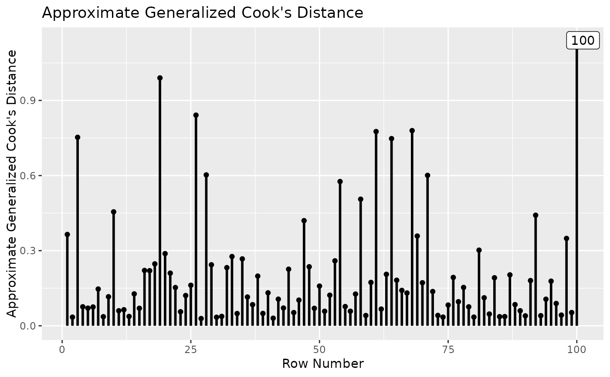

Sample Data: A Latent Variable Structural Model With an Influential Case
Source:R/data.R
sem_dat2.RdA ten-variable dataset with 200 cases, with one influential case.
Format
A data frame with 200 rows and 10 variables:
- case_id
Case ID. Character.
- x1
Indicator. Numeric.
- x2
Indicator. Numeric.
- x3
Indicator. Numeric.
- x4
Indicator. Numeric.
- x5
Indicator. Numeric.
- x6
Indicator. Numeric.
- x7
Indicator. Numeric.
- x8
Indicator. Numeric.
- x9
Indicator. Numeric.
Examples
library(lavaan)
data(sem_dat2)
mod <-
"
f1 =~ x1 + x2 + x3
f2 =~ x4 + x5 + x6
f3 =~ x7 + x8 + x9
f2 ~ a * f1
f3 ~ b * f2
ab := a * b
"
fit <- sem(mod, sem_dat2)
summary(fit)
#> lavaan 0.6-19 ended normally after 30 iterations
#>
#> Estimator ML
#> Optimization method NLMINB
#> Number of model parameters 20
#>
#> Number of observations 100
#>
#> Model Test User Model:
#>
#> Test statistic 42.050
#> Degrees of freedom 25
#> P-value (Chi-square) 0.018
#>
#> Parameter Estimates:
#>
#> Standard errors Standard
#> Information Expected
#> Information saturated (h1) model Structured
#>
#> Latent Variables:
#> Estimate Std.Err z-value P(>|z|)
#> f1 =~
#> x1 1.000
#> x2 1.533 0.412 3.722 0.000
#> x3 1.382 0.364 3.799 0.000
#> f2 =~
#> x4 1.000
#> x5 1.341 0.241 5.563 0.000
#> x6 1.302 0.230 5.654 0.000
#> f3 =~
#> x7 1.000
#> x8 1.652 0.309 5.346 0.000
#> x9 1.067 0.209 5.104 0.000
#>
#> Regressions:
#> Estimate Std.Err z-value P(>|z|)
#> f2 ~
#> f1 (a) 0.507 0.198 2.554 0.011
#> f3 ~
#> f2 (b) 0.528 0.151 3.497 0.000
#>
#> Variances:
#> Estimate Std.Err z-value P(>|z|)
#> .x1 0.660 0.109 6.041 0.000
#> .x2 0.416 0.133 3.125 0.002
#> .x3 0.564 0.127 4.448 0.000
#> .x4 0.544 0.091 5.973 0.000
#> .x5 0.478 0.103 4.628 0.000
#> .x6 0.298 0.083 3.586 0.000
#> .x7 0.484 0.085 5.690 0.000
#> .x8 0.357 0.137 2.606 0.009
#> .x9 0.515 0.092 5.572 0.000
#> f1 0.230 0.102 2.260 0.024
#> .f2 0.291 0.096 3.040 0.002
#> .f3 0.232 0.077 3.000 0.003
#>
#> Defined Parameters:
#> Estimate Std.Err z-value P(>|z|)
#> ab 0.268 0.118 2.270 0.023
#>
inf_out <- influence_stat(fit)
gcd_plot(inf_out)
